Author: Shujing Hu
This project involves implementing various image processing techniques using 2D convolutions and filters, focusing on gradient magnitude computation, unsharp masking, hybrid images, and multi-resolution blending.
I computed the partial derivatives in the x and y directions of the cameraman image using finite difference operators. By convolving the image with the operators D_x and D_y, I obtained the gradient magnitude image and then binarized it to create an edge image.
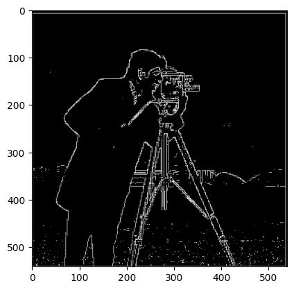Finite Difference Operator Output
I blurred the original image with a Gaussian filter and repeated the process to compare results with the finite difference operator. I created and visualized the DoG filters derived from the Gaussian filter convolved with D_x and D_y.
The image appears smoother, with reduced noise artifacts compared to using just the difference operator.
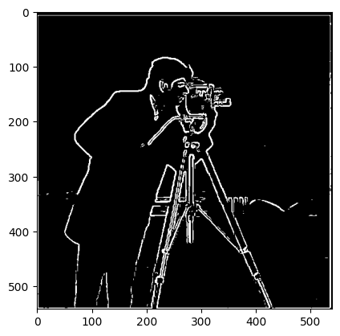Derivative of Gaussian (DoG) Filter Output
Using the unsharp masking technique, I sharpened a blurry image by subtracting its blurred version from the original. The results demonstrate the enhancement of high frequencies, leading to a clearer image.
Original Blurry v.s. Sharpened Image (taj)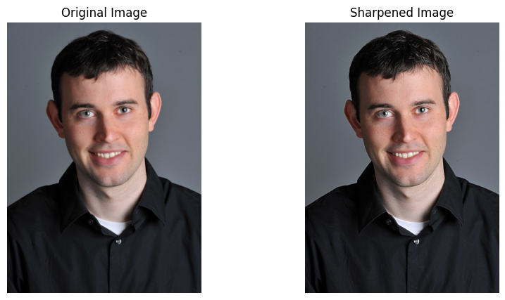
Original Blurry v.s. Sharpened Image (Derek)
I created hybrid images by combining the high-frequency components of one image with the low-frequency components of another. The process was illustrated with Fourier analysis to show the log magnitude of the Fourier transforms of the input and hybrid images.
Hybrid Image Example 1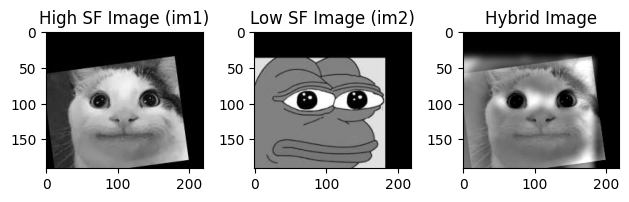 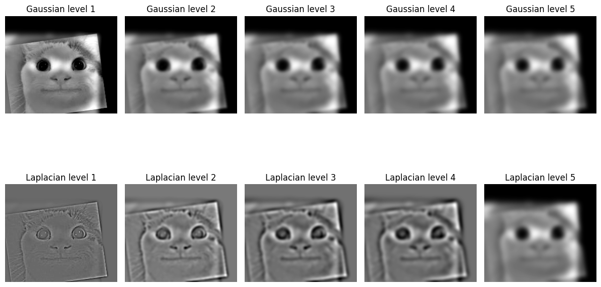 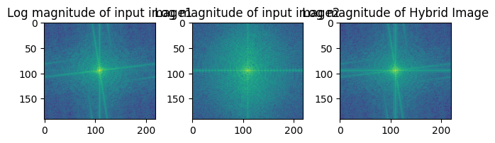
Hybrid Image Example 2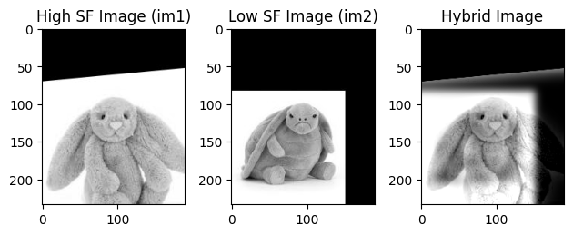 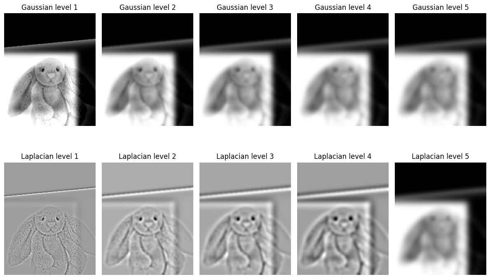
Hybrid Image Example 3
I calculated Gaussian and Laplacian stacks for the blended oraple.
Gaussian and Laplacian stack for the Oraple
Using Gaussian and Laplacian stacks, I blended oraple and one more image with irregular mask using the multi-resolution blending technique. The results produced smooth transitions between the images.
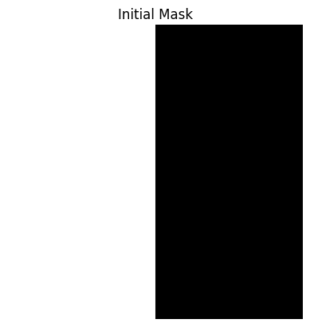 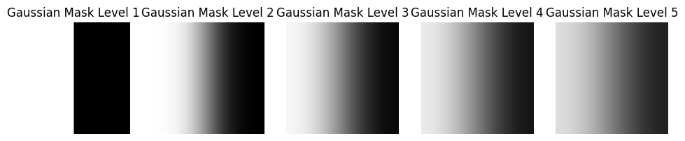 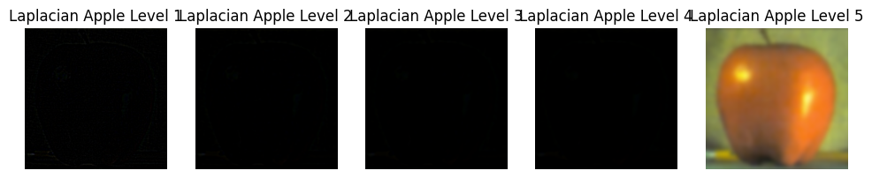 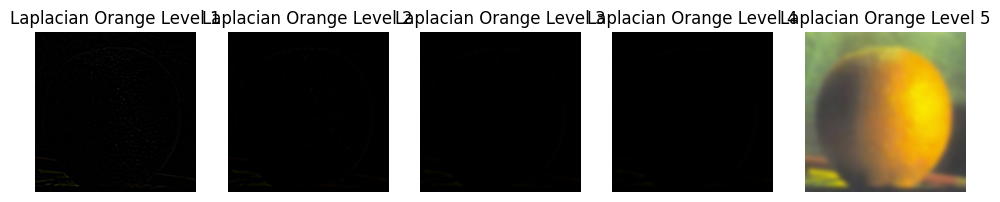Gaussian stack for the mask and Laplacian stack for the apple and orange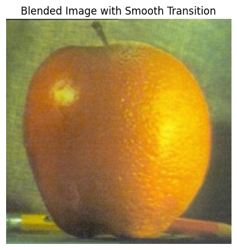
Oraple blended
Original pictures and the irregular mask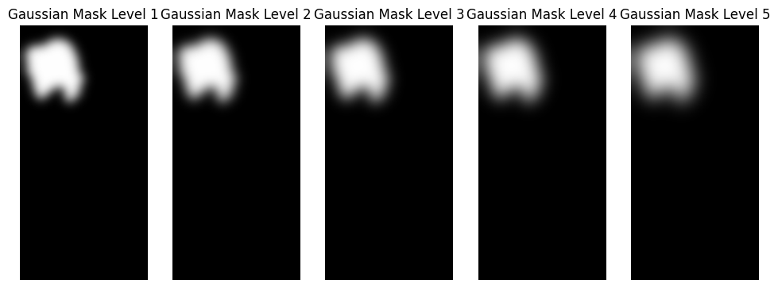 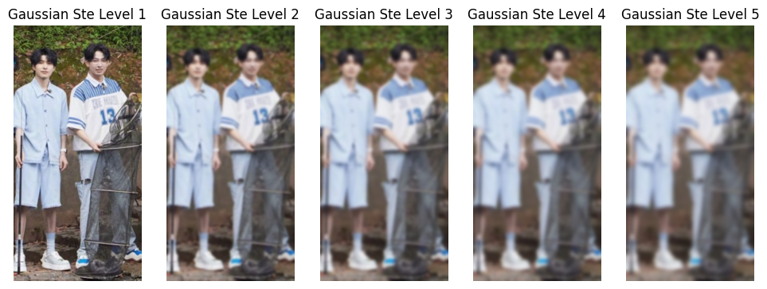 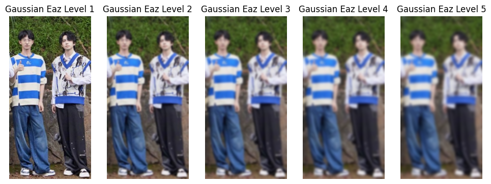
Gaussian stacks for the mask and original pictures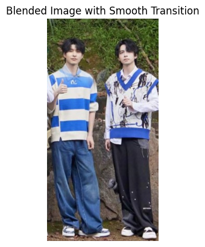
Pictures blended
Original pictures and the irregular mask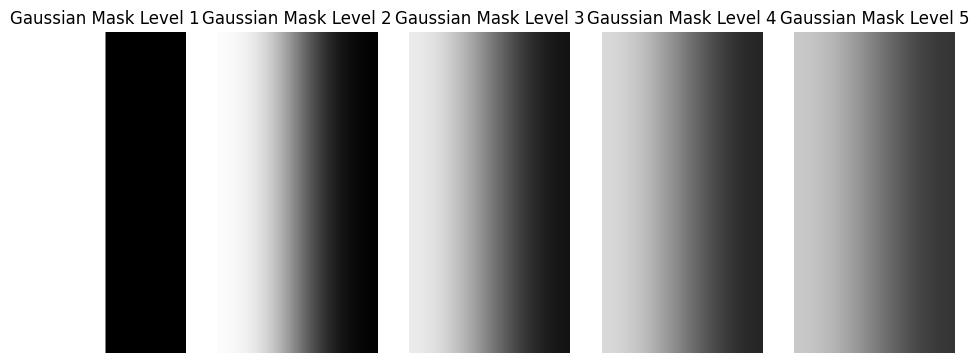
Gaussian stacks for the mask and original pictures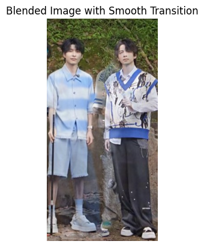
Pictures blended
Throughout the project, I faced challenges when aligning images. My IDE doesn't support calling and using alignment code directly. I also mention it in the README that the helper code needs to be ran first.
This project deepened my understanding of image processing techniques and the impact of different filtering methods on visual quality. It is really interesting to see the imgaes blended smoothly together with different masks.